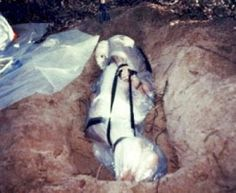
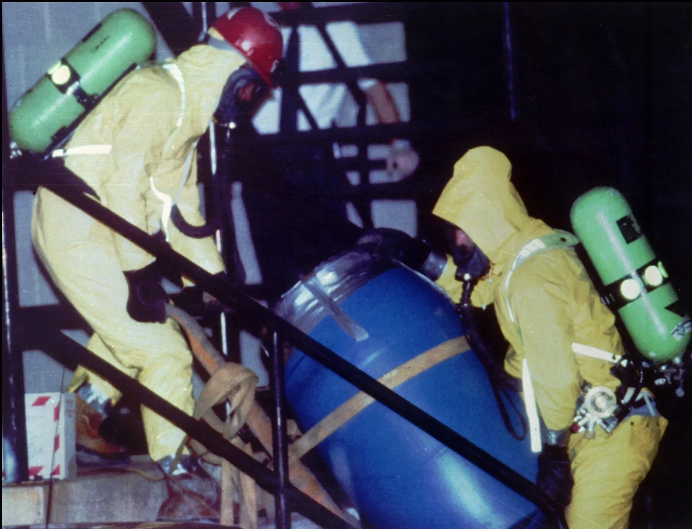
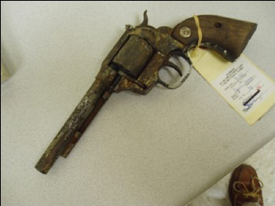
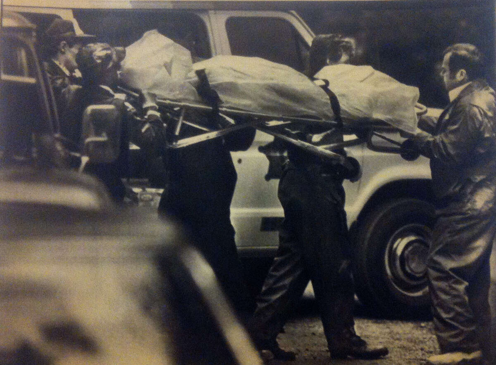
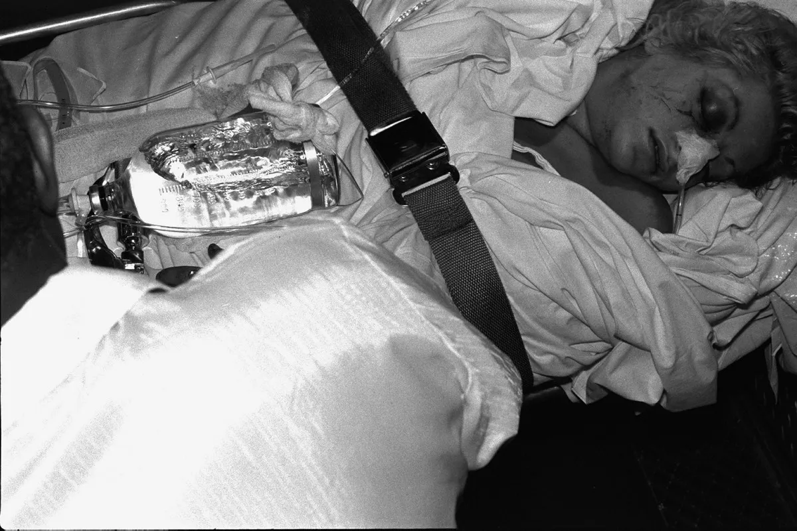
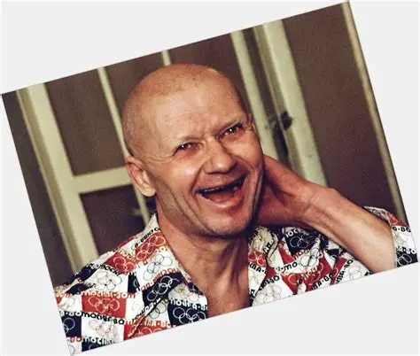
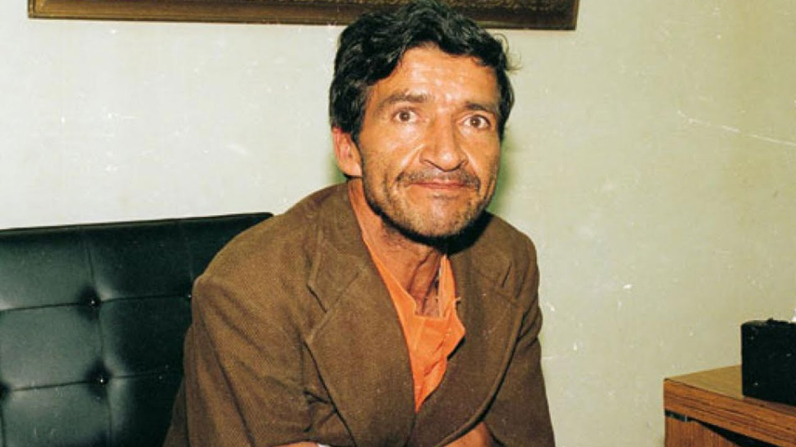
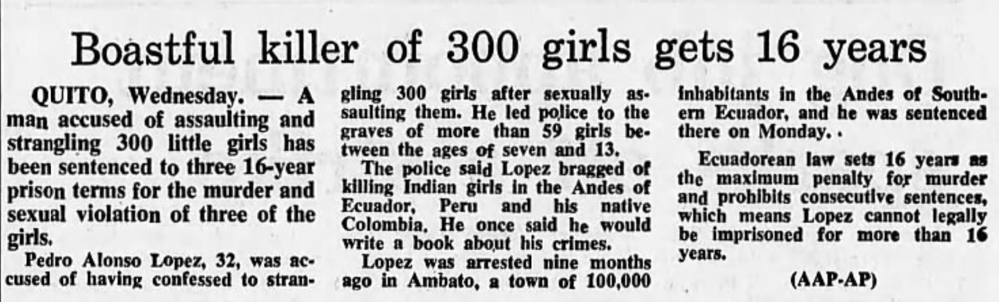
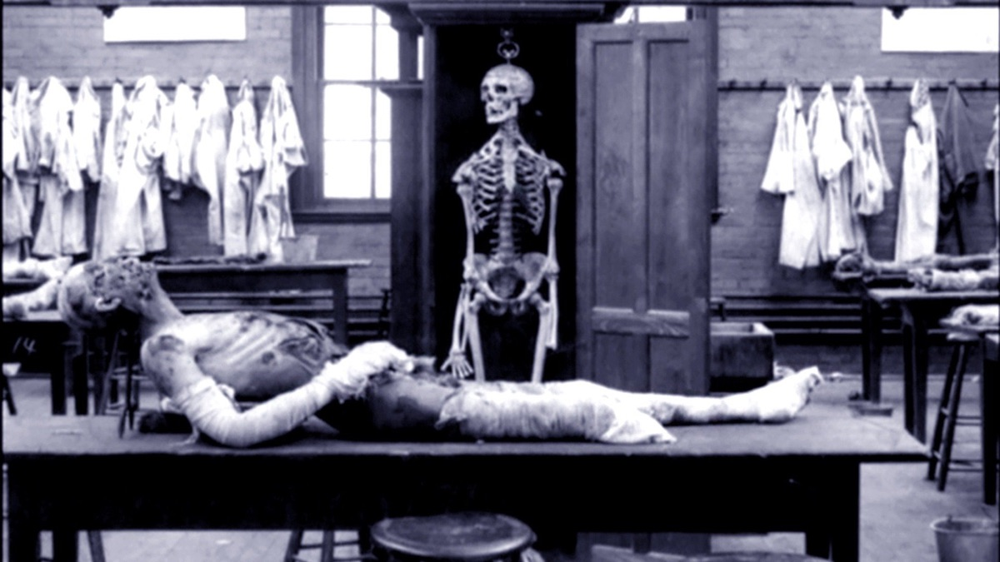
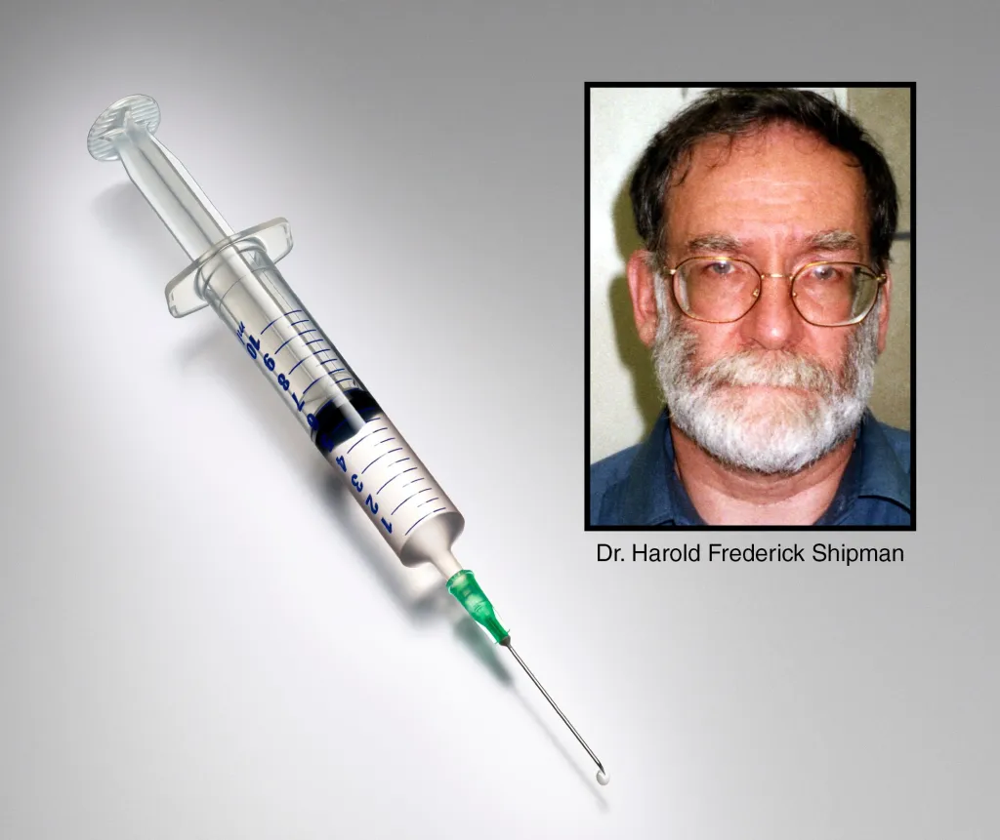

Case no : 1
Name : Dennis Lynn Rader
Born : May 21, 1960
Died : November 28, 1994
Nickname : BTK


Arrest :
Rader was arrested while driving near his Park City home shortly after noon on February 25, 2005.
An officer asked, "Mr. Rader, do you know why you're going downtown?" Rader replied, "Oh, I have suspicions why."Officers from the Wichita Police Department, the Kansas Bureau of Investigation, and FBI and ATF searched Rader's home and vehicle, seizing evidence including computer equipment, a pair of black pantyhose retrieved from a shed and a cylindrical container.
Christ Lutheran Church, Rader's office and the main branch of the Park City library were also searched. At a press conference the next morning, Wichita Police Chief Norman Williams announced, "The bottom line: BTK is arrested."
List of Victims
| Name | Age | Date of attack | Place of attack | Cause of death |
|---|---|---|---|---|
| Joseph Otero | 38 | January 15, 1974 |
803 N. Edgemoor Street Wichita, Kansas |
Suffocated with plastic bag |
| Joseph Otero Jr. | 9 | Hanged with rope | ||
| Josephine Otero | 11 | Strangled with rope | ||
| Julia Maria Otero | 33 | Strangled with rope | ||
| Kathryn Doreen Bright | 21 | April 4, 1974 | 3217 E. 13th Street N.,Wichita | Stabbed with knife |
| Kevin Bright | 21 | __________ | ||
| Shirley Ruth Vian Relford | 24 | March 17, 1977 | 1311 S. Hydraulic Street, Wichita | Strangled with rope |
| Nancy Jo Fox | 25 | December 8, 1977 | 843 S. Pershing Street, Wichita | Strangled with belt |
| Marine Wallace Hedge | 53 | April 27, 1985 | 6254 N. Independence Street, Park City, Kansas | Strangled bare-handed |
| Vicki Lynn Wegerle | 28 | September 16, 1986 | 2404 W. 13th Street N., Wichita | Strangled with nylon stocking |
| Dolores Earline Johnson Davis | 62 | January 19, 1991 | 6226 N. Hillside Street, Wichita | Strangled with pantyhose |
Case no : 2
Name : Jeffrey Lionel Dahmer
Born : March 9, 1945
Died : 28 Nov, 1994
Nickname : The Milwaukee Cannibal

Arrest :
On July 22, 1991, Dahmer approached three men with an offer of $100 to accompany him to his apartment to pose for nude photographs, drink beer and simply keep him company. Only one of the three men, 32-year-old Tracy Edwards, agreed to accompany him to his apartment. Upon entering Dahmer's apartment, Edwards noted a foul odor and several boxes of hydrochloric acid on the floor, which Dahmer claimed to use for cleaning bricks. After some minor conversation, Edwards responded to Dahmer's request to turn his head and view his tropical fish, whereupon Dahmer placed a handcuff upon his wrist. When Edwards asked, "What's happening?" Dahmer unsuccessfully attempted to cuff his wrists together, then told Edwards to accompany him to the bedroom to pose for nude pictures. While inside the bedroom, Edwards noted nude male posters on the wall and that a videotape of The Exorcist III was playing.
List of Victims
| Name | Age | Date of attack | Place of attack | Cause of death |
|---|---|---|---|---|
| Steven Mark Hicks | 18 | June 18, 1978 | Bath Township, Ohio | Blunt force trauma and strangulation |
| Steven Tuomi | 25 | Nov 1987 | Ambassador Hotel, Milwaukee | Strangulation |
| James Doxtator | 14 | Jan 1988 | Dahmer’s grandmother’s house, Milwaukee | Strangulation |
| Richard Guerrero | 25 | Mar 1988 | Dahmer’s grandmother’s house, Milwaukee | Strangulation |
| Anthony Sears | 24 | Mar 1989 | Dahmer’s grandmother’s house, Milwaukee | Strangulation |
| Raymond Smith (Ricky Beeks) | 33 | May 1990 | Oxford Apartments, Milwaukee | Strangulation |
| Edward Smith | 27 | June 1990 | Oxford Apartments, Milwaukee | Strangulation |
| Ernest Miller | 23 | Sept 1990 | Oxford Apartments, Milwaukee | Throat cut |
| David Thomas | 23 | Sept 1990 | Oxford Apartments, Milwaukee | Strangulation |
| Curtis Straughter | 18 | Feb 1991 | Oxford Apartments, Milwaukee | Strangulation |
| Errol Lindsey | 19 | Apr 1991 | Oxford Apartments, Milwaukee | Strangulation |
| Tony Hughes | 31 | May 1991 | Oxford Apartments, Milwaukee | Strangulation |
| Konerak Sinthasomphone | 14 | May 1991 | Oxford Apartments, Milwaukee | Strangulation |
| Matt Turner | 20 | June 1991 | Oxford Apartments, Milwaukee | Strangulation |
| Jeremiah Weinberger | 23 | July 1991 | Oxford Apartments, Milwaukee | Strangulation |
| Oliver Lacy | 24 | July 1991 | Oxford Apartments, Milwaukee | Strangulation |
| Joseph Bradehoft | 25 | July 1991 | Oxford Apartments, Milwaukee | Strangulation |
Case no : 3
Name : Aileen Carol Wuornos
Born : MFebruary 29, 1956
Died : October 9, 2002
Nicknamed : "Lee" / "The Damsel of Death"

Arrest :
On July 4, 1990, Wuornos and Moore abandoned victim Peter Siems' car after they were involved in a crash. Rhonda Bailey, who witnessed the crash, provided police with a description of two women, which later led to a media campaign to locate them.Police also found some of the victims' belongings in pawnshops.Wuornos' fingerprint that was found on a receipt at one of the pawnshops matched the print that was left in Siems' car. Wuornos had a criminal record in Florida, and samples of her prints were in a database.
Why This Case Became Famous?
- Serial Killings: Wuornos murdered at least seven men, making her one of the most infamous female serial killers in American history.
- Childhood Abuse: Her traumatic childhood, marked by abuse and neglect, significantly influenced her behavior and led to her committing violent crimes.
- Legal and Social Impact: Wuornos' case raised debates about the intersections of abuse, mental illness, and crime, and her story has been widely discussed and analyzed.
- Media Attention: Her story was portrayed in the film "Monster" (2003), starring Charlize Theron, which won her an Academy Award for Best Actress.
List of Victims
| Name | Age | Date of attack | Place of attack | Cause of death |
|---|---|---|---|---|
| Richard Mallory | 51 | Nov 30, 1989 | Clearwater, Florida | Gunshot wounds |
| David Spears | 43 | May 19, 1990 | Citrus County, Florida | Gunshot wounds |
| Charles Carskaddon | 40 | June 1, 1990 | Pasco County, Florida | Gunshot wounds |
| Peter Siems | 65 | June 4, 1990 | Orange Springs, Florida | Gunshot wounds |
| Troy Burress | 50 | July 4, 1990 | Marion County, Florida | Gunshot wounds |
| Charles Humphreys | 56 | Sept 11, 1990 | Clearwater, Florida | Gunshot wounds |
| Walter Antonio | 62 | Nov 19, 1990 | Dixie County, Florida | Gunshot wounds |
Case no : 4
Name : Gary Leon Ridgway
Born : February 18, 1949
Nickname: Green River Killer

Arrest :
On November 30, 2001, police arrested Gary Ridgway as a suspect in the Green River Killer case. The case involved the murders of at least 49 young women beginning in 1982, many of whom were prostitutes. Ridgway's arrest was a significant moment in the investigation, as he was believed to be the most prolific serial killer in United States history at the time. Ridgway was arrested while he was leaving the Kenworth truck factory where he worked in Renton, Washington. As part of a plea bargain, he agreed to disclose the locations of still-missing women, which spared him from the death penalty and resulted in a life sentence without the possibility of parole.
(Ridgway later confessed to dozens more victims; authorities confirmed 49 victims in total.)
Investigation :
(The Green River Task Force became one of the largest investigations in U.S. history.)
Why This Case Became Famous?
- Massive police task force.
- Hundreds of suspects.
- Early DNA technology.
- Interviews with thousands of people.
List of Victims
| Name | Age | Date of attack | Place of attack | Cause of death |
|---|---|---|---|---|
| Wendy Lee Coffield | 16 | July 8, 1982 | Seattle, Washington | Strangulation |
| Debra Lynn Bonner | 23 | July 25, 1982 | SeaTac, Washington | Strangulation |
| Marcia Fay Chapman | 31 | Aug 1, 1982 | Seattle, Washington | Strangulation |
| Cynthia Jean Hinds | 17 | Aug 15, 1982 | Seattle, Washington | Strangulation |
| Opal Charmaine Mills | 16 | Aug 12, 1982 | King County, Washington | Strangulation |
| Terry Renee Milligan | 16 | Aug 30, 1982 | Seattle, Washington | Strangulation |
| Sandra Kay Gabbert | 17 | Sept 17, 1982 | Seattle, Washington | Strangulation |
| Cynthia Jane Johnson | 17 | Dec 26, 1982 | Seattle, Washington | Strangulation |
| Carol Ann Christensen | 21 | Jan 8, 1983 | Seattle, Washington | Strangulation |
| Mary Bridget Meehan | 18 | Feb 15, 1983 | Seattle, Washington | Strangulation |
| Debra Lynn Estes | 15 | Mar 1983 | Seattle, Washington | Strangulation |
| Kimberly Ann Nelson | 21 | Mar 1983 | Seattle, Washington | Strangulation |
| Kelly Ware | 22 | July 1983 | Seattle, Washington | Strangulation |
| Diane Childers | 23 | July 1983 | Seattle, Washington | Strangulation |
| Christine Kildahl | 17 | July 1983 | Seattle, Washington | Strangulation |
| Sandra Major | 20 | Aug 1983 | Seattle, Washington | Strangulation |
| Colleen Brockman | 15 | May 1984 | Seattle, Washington | Strangulation |
| Lisa Yates | 19 | Dec 1987 | Seattle, Washington | Strangulation |
| Mary Malvar | 18 | Apr 1983 | King County, Washington | Strangulation |
| Anna Riley | 18 | May 1986 | Seattle, Washington | Strangulation |
Case no : 5
Name : David Richard Berkowitz
Born : June 1, 1953
Nickname: Son of Sam


Arrest :
On July 4, 1990, Wuornos and Moore abandoned victim Peter Siems' car after they were involved in a crash. Rhonda Bailey, who witnessed the crash, provided police with a description of two women, which later led to a media campaign to locate them.Police also found some of the victims' belongings in pawnshops.Wuornos' fingerprint that was found on a receipt at one of the pawnshops matched the print that was left in Siems' car. Wuornos had a criminal record in Florida, and samples of her prints were in a database.
Why This Case Became Famous?
- One of the most feared crime sprees in New York history.
- Media panic across the city.
- Letters sent by the killer to newspapers.
- Massive police investigation.
List of Victims
| Name | Age | Date of attack | Place of attack | Cause of death |
|---|---|---|---|---|
| Donna Lauria | 18 | July 29, 1976 | Bronx, New York City | Gunshot wounds |
| Christine Freund | 26 | Jan 30, 1977 | Queens, New York City | Gunshot wounds |
| Virginia Voskerichian | 19 | Mar 8, 1977 | Manhattan, New York City | Gunshot wounds |
| Valentina Suriani | 18 | Apr 17, 1977 | Bronx, New York City | Gunshot wounds |
| Alexander Esau | 20 | Apr 17, 1977 | Bronx, New York City | Gunshot wounds |
| Stacy Moskowitz | 20 | July 31, 1977 | Brooklyn, New York City | Gunshot wounds |
Injured Victims (Survivors)
| Name | Age | Date of attack | Place of attack | Cause of death |
|---|---|---|---|---|
| Carl Denaro | 20 | Oct 23, 1976 | Bronx | Gunshot wounds |
| Rosemary Keenan | 18 | Oct 23, 1976 | Bronx | Gunshot wounds |
| John Diel | 30 | Nov 27, 1976 | Queens | Gunshot wounds |
| Michelle Forman | 16 | Nov 27, 1976 | Queens | Gunshot wounds |
| Salvatore Lupo | 20 | Apr 17, 1977 | Queens | Gunshot wounds |
| Judy Placido | 17 | June 26, 1977 | Bronx | Gunshot wounds |
| Robert Violante | 20 | July 31, 1977 | Brooklyn | Gunshot wounds |
Case no : 6
Name : Andrei Romanovich Chikatilo
Born : October 16, 1936
Died : February 14, 1994
Nickname: The Butcher of Rostov / The Rostov Ripper

Arrest :
On 13 September 1984, Chikatilo was observed by two undercover detectives attempting to talk to young women at a Rostov bus station. The detectives followed him as he wandered through the city, trying to approach women and committing acts of frotteurism in public places. Upon Chikatilo's arrival at the city's central market he was arrested and held. A search of his belongings revealed a knife with a 20-centimetre (7.9 in) blade, several lengths of rope, and a jar of Vaseline.He was also discovered to be under investigation for minor theft at one of his former employers, which gave the investigators the legal right to hold him for a prolonged period of time. Chikatilo's dubious background was uncovered, and his physical description matched the description of the man seen walking alongside Dmitry Ptashnikov prior to the boy's murder. A sample of Chikatilo's blood was taken, the results of which revealed his blood group to be type A, whereas semen samples found upon a total of six victims murdered by the unknown killer throughout the spring and summer of 1984 had been classified by medical examiners as being type AB.
(Authorities confirmed 52 victims in total.)
Why This Case Became Famous?
- One of the largest serial murder cases in Soviet history.
- Investigation lasted more than a decade.
- Police initially arrested the wrong suspect before finding Chikatilo..
List of Victims
| Name | Age | Date of attack | Place of attack | Cause of death |
|---|---|---|---|---|
| Yelena Zakotnova | 18 | Dec 22, 1978 | Shakhty, Russia | Strangulation |
| Larisa Tkachenko | 17 | Sept 1981 | Rostov Oblast | Strangulation |
| Olga Kravchenko | 10 | July 1982 | Rostov region | Strangulation |
| Sergey Markov | 14 | Oct 1983 | Rostov region | Stabbing |
| Irina Gorbunova | 09 | Dec 1983 | Rostov region | Stabbing |
| Andrei Kravchenko | 10 | Jan 1984 | Rostov region | Stabbing |
| Yevgeny Dolgov | 09 | May 1984 | Rostov region | Stabbing |
| Natalya Shalashneva | 17 | Sept 1984 | Rostov region | Stabbing |
| Marina Bondarenko | 09 | July 1985 | Rostov region | Stabbing |
| Sergey Shein | 12 | Aug 1985 | Rostov region | Stabbing |
Case no : 7
Name : Pedro Alonso López
Born : October 16, 1936
Died : Not confirmed
Official status : Unknown / missing
Nickname: Monster of the Andes


Arrest :
Three days after the flood, López approached 12-year-old Marina (or María) Román Poveda, who was working at the Plaza Rosa market on at Plaza Urbina. López flirted with the girl and offered her 100 sucres to show him around the city, but she refused to go with the stranger. She told her mother Carolina of López's advances, and recognising López, she screamed at him and grabbed him by the arm. She told bystanders that López had tried to abduct her daughter and was potentially responsible for the murders of the recently discovered girls. Local merchants were able to overpower López and hold him until the police arrived.
(Many victims were never formally identified.)
Why This Case Became Famous?
- One of the largest serial murder cases ever recorded.
- Crimes occurred across three countries in South America.
- López confessed to over 300 murders.
- Released after only 16 years in prison.
List of Victims
| Name | Age | Date of attack | Place of attack | Cause of death |
|---|---|---|---|---|
| María Piedad | 10 | 1980 | Ambato, Ecuador | Strangulation |
| Rosa Delgado | 11 | 1979 | Quito region, Ecuador | Strangulation |
| Lucia Fernandez | 09 | 1978 | Peru Andes region | Strangulation |
| Carmen Vargas | 12 | 1977 | Colombia Andes region | Strangulation |
| Ana Torres | 10 | 1979 | Ecuador mountain area | Strangulation |
Case no : 8
Name : Dr. Henry Howard Holmes
Born : May 16, 1861
Died : May 7, 1896
Nickname: America’s First Serial Killer / The Chicago Murderer

Arrest :
Three days after the flood, López approached 12-year-old Marina (or María) Román Poveda, who was working at the Plaza Rosa market on at Plaza Urbina. López flirted with the girl and offered her 100 sucres to show him around the city, but she refused to go with the stranger. She told her mother Carolina of López's advances, and recognising López, she screamed at him and grabbed him by the arm. She told bystanders that López had tried to abduct her daughter and was potentially responsible for the murders of the recently discovered girls. Local merchants were able to overpower López and hold him until the police arrived.
This is the most famous case in America
Why This Case Became Famous?
- One of the earliest famous serial killer cases in the United States.
- The mysterious Chicago “Murder Castle”.
- Occurred during the huge 1893 World’s Fair.
List of Victims
| Name | Age | Date of attack | Place of attack | Cause of death |
|---|---|---|---|---|
| Julia Smythe Connor | 25 | 1891 | Chicago, Illinois | Poisoning |
| Pearl Connor | 08 | 1891 | Chicago, Illinois | Poisoning |
| Emeline Cigrand | 28 | 1892 | Chicago, Illinois | Strangulation |
| Minnie Williams | 24 | 1893 | Chicago, Illinois | Murdered (exact method unclear) |
| Nannie Williams | 27 | 1893 | Chicago, Illinois | Murdered (exact method unclear) |
| Benjamin Pitezel | 43 | 1894 | Philadelphia, Pennsylvania | Poisoning |
Case no : 9
Name : Harold Frederick Shipman
Born : January 14, 1946
Died : January 13, 2004
Nickname: Dr. Death

Arrest :
THarold Shipman was arrested on September 7, 1998, by Greater Manchester Police for the murder of Kathleen Grundy. His arrest marked the beginning of investigations that revealed he was responsible for the deaths of over 200 patients. Following his arrest, Shipman was convicted of 15 counts of murder in January 2000.
(Shipman was convicted of 15 murders, but investigations later suggested over 200 victims.)
Why This Case Became Famous?
- One of the worst medical serial killer cases ever recorded.
- Victims were patients who trusted their doctor.
- Led to major reforms in medical monitoring systems in the UK.
List of Victims
| Name | Age | Date of attack | Place of attack | Cause of death |
|---|---|---|---|---|
| Marie Quinn | 67 | 1995 | Hyde, England | Morphine injection |
| Winifred Mellor | 73 | 1998 | Hyde, England | Morphine injection |
| Joan Melia | 73 | 1998 | Hyde, England | Morphine injection |
| Kathleen Grundy | 81 | 1998 | Hyde, England | Morphine injection |
| Jean Lilley | 71 | 1997 | Hyde, England | Morphine injection |
| Ivy Lomas | 63 | 1998 | Hyde, England | Morphine injection |
| Irene Turner | 67 | 1998 | Hyde, England | Morphine injection |
Case no : 10
Name : Harold Frederick Shipman
Born : April 9, 1974
Nickname: Chessboard Killer / Bitsa Park Killer
Arrest :
THarold Shipman was arrested on September 7, 1998, by Greater Manchester Police for the murder of Kathleen Grundy. His arrest marked the beginning of investigations that revealed he was responsible for the deaths of over 200 patients. Following his arrest, Shipman was convicted of 15 counts of murder in January 2000.
(Authorities confirmed 49 victims, though Pichushkin claimed more.)
Why This Case Became Famous?
- One of the largest serial murder cases in Russia.
- Crimes occurred over 14 years.
- The killer planned to reach 64 victims like a chessboard.
List of Victims
| Name | Age | Date of attack | Place of attack | Cause of death |
|---|---|---|---|---|
| Mikhail Odiychuk | 52 | 2001 | Moscow | Blunt force trauma |
| Sergey Frolov | 67 | 2002 | Bitsa Park | Blunt force trauma |
| Viktor Kuznetsov | 61 | 2002 | Moscow | Blunt force trauma |
| Alexander Chugunov | 47 | 2003 | Bitsa Park | Blunt force trauma |
| Nikolai Makarov | 63 | 2004 | Moscow | Blunt force trauma |